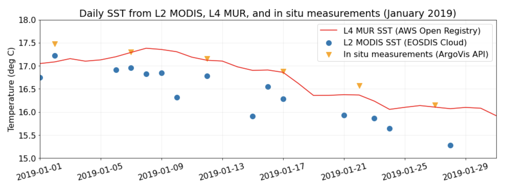
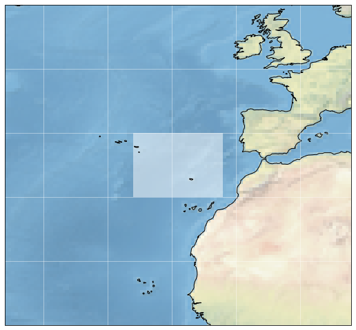
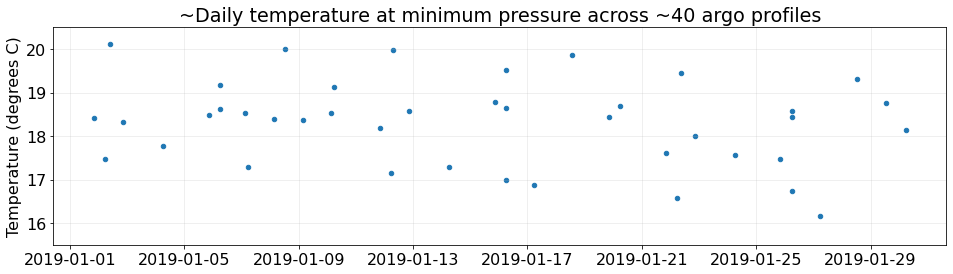
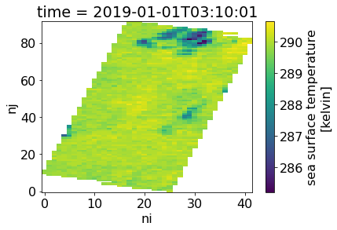
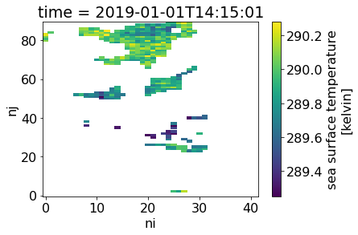
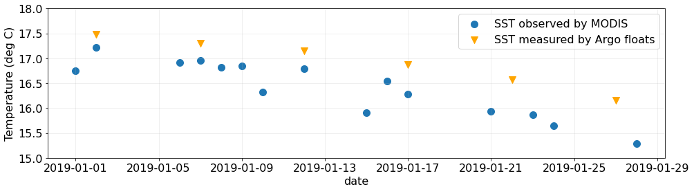
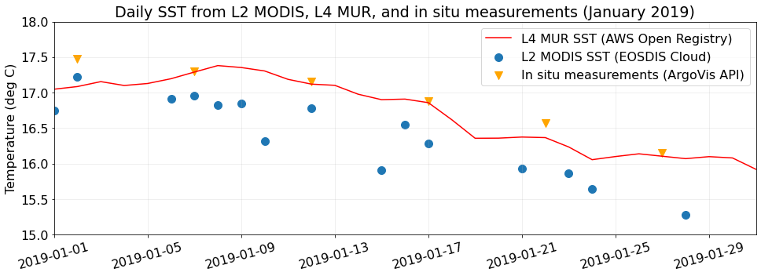

from netrc import netrc
from urllib import request
from platform import system
from getpass import getpass
from datetime import datetime
from http.cookiejar import CookieJar
from os.path import join, isfile, basename, abspath, expanduser
from folium.plugins import MarkerCluster
import folium
import matplotlib
import matplotlib.pyplot as plt
import matplotlib.patches as mpatches
import cartopy.crs as ccrs
import xarray as xr
import pandas as pd
import numpy as np
import requests
import json
import time
matplotlib.rc('font', **{'family' : 'sans-serif', 'weight': 'normal', 'size': 16})
!mkdir -p resources/Use Case: Co-locate satellite and in-situ data for cross-validation
From the PO.DAAC Cookbook, to access the GitHub version of the notebook, follow this link.
User Story
As a coastal applications researcher, I would like to co-locate in-situ measurements and satellite data near the European coast for cross-validation of data or model validation, during the winter of 2019. (*Note: this user stroes was developed to demo at the 2nd Annual SWOT Applications Early Adopter Hackweek, 8 March 2021.)
Learning Objectives
- Co-locate remote sensing data from the Earthdata Cloud archive with in-situ measurements from another provider, programmatically using the Earthdata CMR amd Harmony APIs.
- Workflow can be conducted either locally or in the cloud (i.e. it is compute environment agnostic).
- While capabilities demoed here are shown through an oceanography example, these use cases and examples can be applied as building blocks for developing other user workflows with PO.DAAC and Earthdata datasets, across a range of science and applications disciplines, including for example terrestrial hydrology, coastal, or cryosphere.
- Note: Searching for NASA Earthdata data given point-based observation locations can also be done via the NASA Earthdata Search user interface https://search.earthdata.nasa.gov/search, in addition to programmatically (as shown here).
Datasets used
- Argo floats https://argo.ucsd.edu/
- MODIS-Aqua L2 SST https://podaac.jpl.nasa.gov/dataset/AMSRE-REMSS-L2P-v7a
- MUR L4 SST https://registry.opendata.aws/mur/
Main Steps in Workflow
- Define study region and period of time of interest: Atlantic Ocean west of Portugal and Morocco, January 2019
- Get in-situ Argo floats using the Argo API and prepapre the Argo data (select Argo SST for one float during its journey in Jan 2019 at the top pressure level i.e. nearest the ocean surface)
- Get coincident SST observed by the MODIS satellite, from the NASA Earthdata Cloud (in AWS)
- Search Earthdata Cloud satellite data for collection of interest (MODIS-Aqua L2) (using the CMR API)
- Extract satellite data at the in-situ location for direct comparison (using the Harmony API)
- Download locally (from the cloud archive), or download to your cloud storage or compute space if working within the AWS cloud
- Quality control the MODIS data with daytime and quality flag filters
- Plot time series comparing the in-situ and satellite data at in-situ location(s)
- Validate with a third dataset, MUR L4 SST (once version stored in the AWS Registry of Open Data - public data access)
Note: in order to currently access PO.DAAC Cloud Pathfinder datasets such as MODIS SST L2 from the Earthdata Cloud, your Earthdata login username needs to be added to an restrcited early access list (during the transition period of migrating PO.DAAC data to the Earthdata Cloud). Please contact podaac@podaac.jpl.nasa.gov to make that request.

Requirements
Import modules: The Python ecosystem is organized into modules. A module must be imported before the contents of that modules can be used. It is good practice to import modules in the first code cell of a notebook or at the top of your script. Not only does this make it clear which modules are being used, but it also ensures that the code fails at the beginning because one of the modules is not installed rather half way through after crunching a load of data.
For some modules, it is common practice to shorten the module names according to accepted conventions. For example, the plotting module matplotlib.pyplot is shortened to plt. It is best to stick to these conventions rather than making up your own short names so that people reading your code see immediately what you are doing.
Earthdata Login
An Earthdata Login account is required to access data, as well as discover restricted data, from the NASA Earthdata system. Please visit https://urs.earthdata.nasa.gov to register and manage your Earthdata Login account. This account is free to create and only takes a moment to set up.
The setup_earthdata_login_auth function will allow Python scripts to log into any Earthdata Login application programmatically. To avoid being prompted for credentials every time you run and also allow clients such as curl to log in, you can add the following to a .netrc (_netrc on Windows) file in your home directory:
machine urs.earthdata.nasa.gov
login <your username>
password <your password>Make sure that this file is only readable by the current user or you will receive an error stating “netrc access too permissive.”
$ chmod 0600 ~/.netrc
TOKEN_DATA = ("<token>"
"<username>%s</username>"
"<password>%s</password>"
"<client_id>PODAAC CMR Client</client_id>"
"<user_ip_address>%s</user_ip_address>"
"</token>")
def setup_cmr_token_auth(endpoint: str='cmr.earthdata.nasa.gov'):
ip = requests.get("https://ipinfo.io/ip").text.strip()
return requests.post(
url="https://%s/legacy-services/rest/tokens" % endpoint,
data=TOKEN_DATA % (input("Username: "), getpass("Password: "), ip),
headers={'Content-Type': 'application/xml', 'Accept': 'application/json'}
).json()['token']['id']
def setup_earthdata_login_auth(endpoint: str='urs.earthdata.nasa.gov'):
netrc_name = "_netrc" if system()=="Windows" else ".netrc"
try:
username, _, password = netrc(file=join(expanduser('~'), netrc_name)).authenticators(endpoint)
except (FileNotFoundError, TypeError):
print('Please provide your Earthdata Login credentials for access.')
print('Your info will only be passed to %s and will not be exposed in Jupyter.' % (endpoint))
username = input('Username: ')
password = getpass('Password: ')
manager = request.HTTPPasswordMgrWithDefaultRealm()
manager.add_password(None, endpoint, username, password)
auth = request.HTTPBasicAuthHandler(manager)
jar = CookieJar()
processor = request.HTTPCookieProcessor(jar)
opener = request.build_opener(auth, processor)
request.install_opener(opener)
# Get your authentication token for searching restricted records in the CMR:
_token = setup_cmr_token_auth(endpoint="cmr.earthdata.nasa.gov")
# Start authenticated session with URS to allow restricted data downloads:
setup_earthdata_login_auth(endpoint="urs.earthdata.nasa.gov")Study region and period
Set some “master” inputs to define the time and place contexts for our case studies in the ipynb.
# The timeframe of interest (Argovis API limit == 3 months):
start_date = "2019-01-01"
end_date = "2019-01-31"
# The area/region of interest by latitude/longitude:
aoi_minlon = -26.0
aoi_minlat = 30.0
aoi_maxlon = -12.0
aoi_maxlat = 40.0Plot the spatial extent of our study area with a blue polygon:
ax = plt.subplot(projection=ccrs.PlateCarree())
ax.figure.set_figheight(9)
ax.figure.set_figwidth(9)
ax.add_patch(mpatches.Rectangle(xy=[aoi_minlon, aoi_minlat],
width=aoi_maxlon-aoi_minlon,
height=aoi_maxlat-aoi_minlat,
facecolor='white',
alpha=0.5,
transform=ccrs.Geodetic())
)
ax.set_extent((aoi_minlon-20.,
aoi_maxlon+20.,
aoi_minlat-20.,
aoi_maxlat+20.), crs=ccrs.PlateCarree())
ax.stock_img()
ax.coastlines()
ax.gridlines(color="white", alpha=0.5)
plt.show()
Access temperature profiles from ArgoVis API
ArgoVis is an API and visualization service that provides access to Argo float profiles. The endpoint for requesting profile data is given in the cell below:
argo_api_endpoint = 'https://argovis.colorado.edu/selection/profiles/?'
print(argo_api_endpoint)https://argovis.colorado.edu/selection/profiles/?Create the AOI polygon in required XY format, make it a string, and collect the dictionary of API parameters:
argo_api_aoi = [[[aoi_minlon, aoi_minlat],
[aoi_minlon, aoi_maxlat],
[aoi_maxlon, aoi_maxlat],
[aoi_maxlon, aoi_minlat],
[aoi_minlon, aoi_minlat]]]
argo_api_params = {
'startDate': start_date.replace("-0","-"), # 1.
'endDate': end_date.replace("-0","-"), # 1. No leading zeros in start/end dates
'shape': str(argo_api_aoi).replace(" ",""), # 2. Array of XY vertices for AOI polygon
#'presRange': "[0,30]" # 3. We wont limit by pressure range
}
argo_api_params{'startDate': '2019-1-1',
'endDate': '2019-1-31',
'shape': '[[[-26.0,30.0],[-26.0,40.0],[-12.0,40.0],[-12.0,30.0],[-26.0,30.0]]]'}Submit the request parameters to the Argovis API. You should receive a JSON response back. Print the number of profiles inside our AOI:
argo_api_response = requests.get(url=argo_api_endpoint, params=argo_api_params)
# Load the response from JSON if the response status is 200:
if argo_api_response.status_code == 200:
argo_profiles = argo_api_response.json()
print(len(argo_profiles))
else:
# Otherwise dump the text for more clues:
print(argo_api_response.text)41Prepare profile data for further analysis
Concatenate the list of metadata dictionaries returned for the argos into a table and update a few of its columns with Pythonic types:
argo_df = pd.DataFrame(argo_profiles).sort_values("date")
# Add a column with pandas datetime objects for easier indexing
argo_df['datetime'] = pd.to_datetime(argo_df['date'])
# And then replace the original date column with Python dates
argo_df['date'] = argo_df.datetime.apply(lambda x: x.date).tolist()
# Add two columns of sanitized lats/lons to the data frame
argo_df['lat'] = argo_df['roundLat'].astype(float).tolist()
argo_df['lon'] = argo_df['roundLon'].astype(float).tolist()
argo_df.info()<class 'pandas.core.frame.DataFrame'>
Int64Index: 41 entries, 40 to 0
Data columns (total 36 columns):
# Column Non-Null Count Dtype
--- ------ -------------- -----
0 _id 41 non-null object
1 POSITIONING_SYSTEM 41 non-null object
2 DATA_CENTRE 41 non-null object
3 PI_NAME 41 non-null object
4 WMO_INST_TYPE 41 non-null object
5 VERTICAL_SAMPLING_SCHEME 41 non-null object
6 DATA_MODE 41 non-null object
7 PLATFORM_TYPE 41 non-null object
8 measurements 41 non-null object
9 station_parameters 41 non-null object
10 pres_max_for_TEMP 41 non-null float64
11 pres_min_for_TEMP 41 non-null float64
12 pres_max_for_PSAL 41 non-null float64
13 pres_min_for_PSAL 41 non-null float64
14 max_pres 41 non-null float64
15 date 41 non-null object
16 date_added 41 non-null object
17 date_qc 41 non-null int64
18 lat 41 non-null float64
19 lon 41 non-null float64
20 geoLocation 41 non-null object
21 position_qc 41 non-null int64
22 cycle_number 41 non-null int64
23 dac 41 non-null object
24 platform_number 41 non-null int64
25 station_parameters_in_nc 41 non-null object
26 nc_url 41 non-null object
27 DIRECTION 41 non-null object
28 BASIN 41 non-null int64
29 core_data_mode 41 non-null object
30 roundLat 41 non-null object
31 roundLon 41 non-null object
32 strLat 41 non-null object
33 strLon 41 non-null object
34 formatted_station_parameters 41 non-null object
35 datetime 41 non-null datetime64[ns, UTC]
dtypes: datetime64[ns, UTC](1), float64(7), int64(5), object(23)
memory usage: 11.9+ KBYou can download profiles in netCDF format from the FTP link stored in the nc_url fields of the response. Here’s the URL for the first of the profiles:
print(argo_df.iloc[0].nc_url)ftp://ftp.ifremer.fr/ifremer/argo/dac/coriolis/6902663/profiles/R6902663_124.ncDisplay a table summarizing the space/time characteristics of eaach profile:
argo_df[['platform_number', 'cycle_number', 'datetime', 'lon', 'lat']] #, 'measurements']]| platform_number | cycle_number | datetime | lon | lat | |
|---|---|---|---|---|---|
| 40 | 6902663 | 124 | 2019-01-01 20:14:00+00:00 | -17.383 | 35.601 |
| 39 | 6901260 | 49 | 2019-01-02 05:43:00+00:00 | -12.812 | 37.707 |
| 38 | 6901143 | 228 | 2019-01-02 09:22:20+00:00 | -21.083 | 32.254 |
| 37 | 6902664 | 124 | 2019-01-02 20:28:00+00:00 | -18.411 | 34.985 |
| 36 | 3901643 | 43 | 2019-01-04 06:13:00+00:00 | -22.429 | 37.556 |
| 35 | 3901942 | 48 | 2019-01-05 20:23:30+00:00 | -15.286 | 35.316 |
| 34 | 6901262 | 22 | 2019-01-06 05:42:59.999000+00:00 | -17.967 | 34.228 |
| 33 | 3901932 | 22 | 2019-01-06 05:49:00+00:00 | -19.904 | 33.428 |
| 32 | 1901688 | 288 | 2019-01-07 03:11:53+00:00 | -23.134 | 34.258 |
| 31 | 6901260 | 50 | 2019-01-07 05:26:00+00:00 | -12.887 | 37.905 |
| 30 | 1901688 | 289 | 2019-01-08 03:15:16+00:00 | -23.137 | 34.248 |
| 29 | 6902552 | 167 | 2019-01-08 12:50:00+00:00 | -23.798 | 33.144 |
| 28 | 1901688 | 290 | 2019-01-09 03:19:48+00:00 | -23.148 | 34.233 |
| 27 | 1901688 | 291 | 2019-01-10 03:27:35+00:00 | -23.158 | 34.218 |
| 26 | 6901273 | 11 | 2019-01-10 05:25:00+00:00 | -12.473 | 32.219 |
| 25 | 6902663 | 125 | 2019-01-11 20:15:00+00:00 | -17.071 | 35.830 |
| 24 | 6901260 | 51 | 2019-01-12 05:18:00+00:00 | -12.982 | 38.047 |
| 23 | 6901143 | 229 | 2019-01-12 07:05:12+00:00 | -21.206 | 32.474 |
| 22 | 6902664 | 125 | 2019-01-12 20:16:00+00:00 | -18.198 | 35.057 |
| 21 | 3901643 | 44 | 2019-01-14 05:58:00+00:00 | -22.706 | 37.542 |
| 20 | 3901942 | 49 | 2019-01-15 20:37:30+00:00 | -15.739 | 34.976 |
| 19 | 6901262 | 23 | 2019-01-16 05:39:00+00:00 | -17.725 | 34.223 |
| 18 | 6902785 | 54 | 2019-01-16 05:56:00+00:00 | -25.507 | 38.293 |
| 17 | 3901932 | 23 | 2019-01-16 06:04:00+00:00 | -19.081 | 34.101 |
| 16 | 6901260 | 52 | 2019-01-17 05:28:00+00:00 | -13.092 | 38.266 |
| 15 | 6902552 | 168 | 2019-01-18 13:02:00+00:00 | -23.575 | 33.225 |
| 14 | 1901688 | 292 | 2019-01-19 20:13:54.002000+00:00 | -23.272 | 34.136 |
| 13 | 6901273 | 12 | 2019-01-20 05:31:00+00:00 | -12.447 | 32.181 |
| 12 | 6902663 | 126 | 2019-01-21 20:21:00+00:00 | -16.892 | 35.982 |
| 11 | 6901260 | 53 | 2019-01-22 05:33:00+00:00 | -13.146 | 38.378 |
| 10 | 6901143 | 230 | 2019-01-22 09:01:03+00:00 | -21.136 | 32.880 |
| 9 | 6902664 | 126 | 2019-01-22 20:23:00+00:00 | -18.099 | 35.114 |
| 8 | 3901643 | 45 | 2019-01-24 06:11:00+00:00 | -23.115 | 37.358 |
| 7 | 3901942 | 50 | 2019-01-25 20:21:30+00:00 | -14.963 | 35.402 |
| 6 | 6901262 | 24 | 2019-01-26 05:47:59.999000+00:00 | -17.474 | 34.302 |
| 5 | 3901932 | 24 | 2019-01-26 06:00:00+00:00 | -18.151 | 34.375 |
| 4 | 6902785 | 55 | 2019-01-26 06:10:00+00:00 | -25.212 | 38.213 |
| 3 | 6901260 | 54 | 2019-01-27 05:38:00+00:00 | -13.265 | 38.484 |
| 2 | 6902552 | 169 | 2019-01-28 12:45:00+00:00 | -23.267 | 33.294 |
| 1 | 1901688 | 293 | 2019-01-29 13:03:27.001000+00:00 | -23.403 | 34.206 |
| 0 | 6901273 | 13 | 2019-01-30 05:27:00+00:00 | -12.737 | 32.602 |
Now plot argo profile locations on an interactive map.
This plot uses folium/leaflet. Hover/click the clusters (which correspond to specific Argo float platforms) to zoom to the groups of individual profiles and display metadata about them:
def _get_tooltip(profile: dict):
return """<b>Date</b>: {date}<br>
<b>Profile ID</b>: {_id}<br>
<b>Platform ID</b>: {platform_number}<br>
<b>Latitude</b>: {lat}<br>
<b>Longitude</b>: {lon}<br>""".format(**profile)
m = folium.Map(location=[argo_df['lat'].mean(), argo_df['lon'].mean()],
tiles="Stamen Terrain",
zoom_start=5, )
# Loop over list of unique platform_numbers (floats)
unique_argo_platform_numbers = argo_df.platform_number.unique().tolist()
for i, platform in enumerate(unique_argo_platform_numbers):
# Get row(s) for the current platform
p = argo_df[argo_df['platform_number']==platform]
# Make an empty marker cluster to add to the map widget
cluster = MarkerCluster(name=p['platform_number'])
# Make markers in a loop and add to the cluster:
for c in p['cycle_number'].tolist():
# Select the row for the current profile ('cycle')
profile = p[p['cycle_number']==c].iloc[0]
# Create a new marker and add it to the cluster
cluster.add_child(folium.Marker(
location=[profile['lat'], profile['lon']],
tooltip=_get_tooltip(profile.to_dict())))
m.add_child(cluster)
display(m)Make this Notebook Trusted to load map: File -> Trust Notebook
Reformat profile data into data frames
The in situ measurements temperature, pressure, and salinity readings collected during each profile are returned inside the JSON response.
The format of the measurements field is perfect for conversion to pandas data frames. Apply pandas.DataFrame over the entire measurements column to make a pandas.Series of data frames, and replace the existing content in the measurements column:
argo_df['measurements'] = argo_df['measurements'].apply(pd.DataFrame).tolist()
# Print statistical summary of the table content:
argo_df.iloc[0].measurements.describe()| temp | pres | psal | |
|---|---|---|---|
| count | 105.000000 | 105.000000 | 105.000000 |
| mean | 11.579429 | 794.390476 | 35.832990 |
| std | 4.726514 | 655.512828 | 0.433002 |
| min | 4.053000 | 6.000000 | 35.073000 |
| 25% | 8.096000 | 146.000000 | 35.597000 |
| 50% | 10.885000 | 713.000000 | 35.765000 |
| 75% | 15.750000 | 1363.000000 | 36.128000 |
| max | 18.418000 | 2010.000000 | 36.504000 |
Plot temperature at the minimum pressure for each profile
This cell applies a lambda over the measurements column to slice the row corresponding to the minimum pressure bin for each profile and returns the corresponding temperature measurement:
def _get_prof_temp_at_pres_min(x):
return x[x['pres']==x['pres'].min()]['temp'].item()
# Apply the fuunction over the column of measurements tables
argo_df['temp_at_pres_min'] = argo_df['measurements'].apply(_get_prof_temp_at_pres_min).tolist()
# Plot temperature measured nearest to the sea surface for each profile
argo_df.plot.scatter(x="datetime", y="temp_at_pres_min", figsize=(16, 4))
plt.title("~Daily temperature at minimum pressure across ~40 argo profiles")
plt.xlabel(None)
plt.ylabel("Temperature (degrees C)")
plt.ylim(15.5, 20.5)
plt.grid(alpha=0.25)
Select an Argo of Interest and its platform_number
See which floats had the most profiles within our timeframe/area of interest:
argo_df.groupby("platform_number").count()['cycle_number']platform_number
1901688 6
3901643 3
3901932 3
3901942 3
6901143 3
6901260 6
6901262 3
6901273 3
6902552 3
6902663 3
6902664 3
6902785 2
Name: cycle_number, dtype: int64Choose a float with six profiles to study further during the remainder of the notebook.
target_argo = 6901260
# Select rows (profiles) for the desired platform:
argo_skinny = argo_df[argo_df.platform_number==target_argo].copy()
argo_skinny.describe()| pres_max_for_TEMP | pres_min_for_TEMP | pres_max_for_PSAL | pres_min_for_PSAL | max_pres | date_qc | lat | lon | position_qc | cycle_number | platform_number | BASIN | temp_at_pres_min | |
|---|---|---|---|---|---|---|---|---|---|---|---|---|---|
| count | 6.000000 | 6.0 | 6.000000 | 6.0 | 6.000000 | 6.0 | 6.000000 | 6.000000 | 6.0 | 6.000000 | 6.0 | 6.0 | 6.000000 |
| mean | 1992.666667 | 6.0 | 1992.666667 | 6.0 | 1992.666667 | 1.0 | 38.131167 | -13.030667 | 1.0 | 51.500000 | 6901260.0 | 1.0 | 16.921000 |
| std | 21.500388 | 0.0 | 21.500388 | 0.0 | 21.500388 | 0.0 | 0.297238 | 0.168997 | 0.0 | 1.870829 | 0.0 | 0.0 | 0.495337 |
| min | 1961.000000 | 6.0 | 1961.000000 | 6.0 | 1961.000000 | 1.0 | 37.707000 | -13.265000 | 1.0 | 49.000000 | 6901260.0 | 1.0 | 16.153000 |
| 25% | 1980.500000 | 6.0 | 1980.500000 | 6.0 | 1980.500000 | 1.0 | 37.940500 | -13.132500 | 1.0 | 50.250000 | 6901260.0 | 1.0 | 16.643250 |
| 50% | 1994.500000 | 6.0 | 1994.500000 | 6.0 | 1994.500000 | 1.0 | 38.156500 | -13.037000 | 1.0 | 51.500000 | 6901260.0 | 1.0 | 17.014000 |
| 75% | 2010.750000 | 6.0 | 2010.750000 | 6.0 | 2010.750000 | 1.0 | 38.350000 | -12.910750 | 1.0 | 52.750000 | 6901260.0 | 1.0 | 17.263250 |
| max | 2014.000000 | 6.0 | 2014.000000 | 6.0 | 2014.000000 | 1.0 | 38.484000 | -12.812000 | 1.0 | 54.000000 | 6901260.0 | 1.0 | 17.479000 |
Access sea surface temperature from MODIS
The user guide for MODIS Level 2 Sea Surface Temperature (SST) from GHRSST is available on the PO.DAAC Drive: https://podaac-tools.jpl.nasa.gov/drive/files/OceanTemperature/ghrsst/docs/GDS20r5.pdf
We will access L2 SST data for our AOI and time period of interest by submitting two subset requests to the Harmony API.
Redefine the AOI to the minimum XY bounds of selected profiles
Simply replace the aoi_* Python variables with min/max of the lat and lon columns in the new argo_skinny data frame:
aoi_minlon = argo_skinny.lon.min()
aoi_maxlon = argo_skinny.lon.max()
aoi_minlat = argo_skinny.lat.min()
aoi_maxlat = argo_skinny.lat.max()
aoi_minlon, aoi_minlat, aoi_maxlon, aoi_maxlat(-13.265, 37.707, -12.812, 38.484)Search the Common Metadata Repository (CMR) for its unique concept-id
The API requires a dataset identifier that we must obtain from CMR. In the next cell, submit a request to the CMR API to grab the metadata for to the dataset/collection.
modis_results = requests.get(
url='https://cmr.earthdata.nasa.gov/search/collections.umm_json',
params={'provider': "POCLOUD",
'ShortName': "MODIS_A-JPL-L2P-v2019.0",
'token': _token}
).json()
# Select the first/only record in the JSON response:
modis_coll = modis_results['items'][0]
# Select the 'concept-id' from the 'meta' dictionary:
modis_ccid = modis_coll['meta']['concept-id']
modis_ccid'C1940473819-POCLOUD'Request subsets from the Harmony API
We will submit two requests to the Harmony API. The API is under active development, and it’s therefore recommended that you test your input parameters in the Swagger API interface.
The next cell joins the base url for the API to the concept-id obtained above. Run the cell and print the complete url to confirm:
harmony_url = "https://harmony.earthdata.nasa.gov"
harmony_url_modis = f"{harmony_url}/{modis_ccid}/ogc-api-coverages/1.0.0/collections/all/coverage/rangeset?"
print(harmony_url_modis)https://harmony.earthdata.nasa.gov/C1940473819-POCLOUD/ogc-api-coverages/1.0.0/collections/all/coverage/rangeset?Make a dictionary of subset parameters and format the values to meet requirements of the Harmony API. (See the Swagger UI linked above for more information about those requirements.)
Note how I’ve commented out the time parameter for the second half of January. I requested the first 15 days and then the second 15 days in two requests to get the whole month.
Here we print the parameters for the first request:
harmony_params_modis1 = {
'time': f'("{start_date}T00:00:00.000Z":"2019-01-15T23:59:59.999Z")',
'lat': f'({aoi_minlat}:{aoi_maxlat})',
'lon': f'({aoi_minlon}:{aoi_maxlon})',
}
harmony_params_modis2 = {
'time': f'("2019-01-16T00:00:00.000Z":"{end_date}T23:59:59.999Z")',
'lat': f'({aoi_minlat}:{aoi_maxlat})',
'lon': f'({aoi_minlon}:{aoi_maxlon})',
}
harmony_params_modis1{'time': '("2019-01-01T00:00:00.000Z":"2019-01-15T23:59:59.999Z")',
'lat': '(37.707:38.484)',
'lon': '(-13.265:-12.812)'}Complete the url by formatting the query portion using the parameters dictionary:
request_url_modis1 = harmony_url_modis+"subset=time{time}&subset=lat{lat}&subset=lon{lon}".format(**harmony_params_modis1)
request_url_modis2 = harmony_url_modis+"subset=time{time}&subset=lat{lat}&subset=lon{lon}".format(**harmony_params_modis2)
print(request_url_modis1)https://harmony.earthdata.nasa.gov/C1940473819-POCLOUD/ogc-api-coverages/1.0.0/collections/all/coverage/rangeset?subset=time("2019-01-01T00:00:00.000Z":"2019-01-15T23:59:59.999Z")&subset=lat(37.707:38.484)&subset=lon(-13.265:-12.812)Submit the request parameters to the Harmony API endpoint
I’ve already submitted the two requests required to obtain full coverage for our region and timeframe of interest (the two urls in the job_status list below). To submit a new request, or to submit these two MODIS requests again, comment out the two items in the list like this:
job_status = [
#'https://...'
#'https://...
]It should trigger new requests in the subsequent cells.
job_status = [
# "https://harmony.earthdata.nasa.gov/jobs/512ca343-3bfe-48c5-a480-9281b7348761", # First time slice
# "https://harmony.earthdata.nasa.gov/jobs/5b29414d-3856-4e94-9568-01b32b02a951", # Second time slice
]The next cell should download a JSON for your new request or from the first request that I submitted while I developed this notebook.
Print the message field of the JSON response:
request_urls_for_modis = [request_url_modis1, request_url_modis2]
if len(job_status)==0:
# Loop over the list of request urls:
for r in request_urls_for_modis:
# Submit the request and decode the response from json string to dict:
response_modis = requests.get(r)
# If the response came back with something other than '2xx', raise an error:
if not response_modis.status_code // 100 == 2:
raise Exception(response_modis.text)
else:
response_data = response_modis.json()
# Append the status endpoint to the list of 'job_status' urls:
job_status.append(response_data['links'][0]['href'])
else:
response_data = requests.get(job_status[0]).json()
response_data['message']'The job is being processed'Successful requests to the API will respond with a JSON that starts like this:
{
"username": "jmcnelis",
"status": "running",
"message": "The job is being processed",
"progress": 0,
"createdAt": "2021-02-25T02:09:35.972Z",
"updatedAt": "2021-02-25T02:09:35.972Z",
...The example above is truncated to the first several lines for the sake of space.
Monitor the status of an in-progress job
Select the status URL(s) from the list(s) of links:
if len(job_status)==0:
try:
job_status = [l['href'] for l in response_data['links'] if l['title']=="Job Status"]
except (KeyError, IndexError) as e:
raise e
print(job_status)['https://harmony.earthdata.nasa.gov/jobs/558426d1-3df4-4cc2-80dc-943d03ac5810', 'https://harmony.earthdata.nasa.gov/jobs/dafd8c06-89b5-4dd6-af1d-cacb12512101']Run the next cell to monitor the status of as many requests as you need.
It will loop over the job_status list and wait for all the requests to finish processing. (It terminates when the status field of the JSON response does not contain the string "running".)
wait = 10 # The number of seconds to wait between each status check
completed = {} # A dict of JSON responses for completed jobs
# Loop repeatedly to check job status. Wait before retrying.
while True:
for j in job_status: # Iterate over list of job urls
if j in completed: # Skip if completed.
continue
# Get the current job's status as a JSON object.
job_data = requests.get(j).json()
if job_data['status']!='running':
completed[j] = job_data # Add to 'completed' if finished
# Break loop if 'completed' dictionary contains all jobs.
if len(completed)==2:
break
# If still processing, print a status update and wait ten seconds.
print(f"# Job(s) in progress ({len(completed)+1}/{len(job_status)})")
time.sleep(wait)
print(f"\n{'&'*40}\n%\t\tDONE!\n{'&'*40}\n")# Job(s) in progress (1/2)
# Job(s) in progress (1/2)
# Job(s) in progress (1/2)
# Job(s) in progress (1/2)
# Job(s) in progress (1/2)
# Job(s) in progress (1/2)
# Job(s) in progress (1/2)
# Job(s) in progress (1/2)
# Job(s) in progress (2/2)
&&&&&&&&&&&&&&&&&&&&&&&&&&&&&&&&&&&&&&&&
% DONE!
&&&&&&&&&&&&&&&&&&&&&&&&&&&&&&&&&&&&&&&&
The final response(s) are massive whenever your subset results in a large number of output granules. Print everything but the links here:
print(json.dumps({k:v for k, v in job_data.items() if k!="links"}, indent=2)){
"username": "jmcnelis",
"status": "successful",
"message": "The job has completed successfully",
"progress": 100,
"createdAt": "2021-03-15T21:08:45.844Z",
"updatedAt": "2021-03-15T21:10:51.310Z",
"request": "https://harmony.earthdata.nasa.gov/C1940473819-POCLOUD/ogc-api-coverages/1.0.0/collections/all/coverage/rangeset?subset=time(%222019-01-16T00%3A00%3A00.000Z%22%3A%222019-01-31T23%3A59%3A59.999Z%22)&subset=lat(37.707%3A38.484)&subset=lon(-13.265%3A-12.812)",
"numInputGranules": 55,
"jobID": "dafd8c06-89b5-4dd6-af1d-cacb12512101"
}Now look at the first url that points to a subset file (skip the first two because they point to other stuff about the order):
print(json.dumps(job_data['links'][2], indent=2)){
"href": "https://harmony.earthdata.nasa.gov/service-results/harmony-prod-staging/public/podaac/l2-subsetter/80c8503e-c958-4825-b072-ccdee3f7863b/20190116023001-JPL-L2P_GHRSST-SSTskin-MODIS_A-N-v02.0-fv01.0_subsetted.nc4",
"title": "20190116023001-JPL-L2P_GHRSST-SSTskin-MODIS_A-N-v02.0-fv01.0_subsetted.nc4",
"type": "application/x-netcdf4",
"rel": "data",
"bbox": [
-13.3,
37.7,
-12.8,
38.5
],
"temporal": {
"start": "2019-01-16T02:30:01.000Z",
"end": "2019-01-16T02:34:59.000Z"
}
}This cell collects all the output links (Python dicts) from our requests in a list and prints the total number of outputs:
job_links = []
for j in list(completed.values()):
for l in j['links']:
if l['href'].endswith("subsetted.nc4"):
job_links.append(l)
print(len(job_links))74Prepare subset data for further analysis
Get the subset metadata as pandas.DataFrame. We can use apply logic to calculate stats over the time series in subsequent steps. Print the number of rows to confirm. (Should match above)
subsets_df = pd.DataFrame(data=[{**l, **l['temporal']} for l in job_links])
print(subsets_df.index.size)74Select day/drop night observations
Add a day/night flag column to the table. Apply a function over the href column to check the source filename for a string indicating day/night for the swath:
subsets_df['daytime'] = subsets_df['href'].apply(lambda x: 'MODIS_A-N' not in x)
subsets_df.info()<class 'pandas.core.frame.DataFrame'>
RangeIndex: 74 entries, 0 to 73
Data columns (total 9 columns):
# Column Non-Null Count Dtype
--- ------ -------------- -----
0 href 74 non-null object
1 title 74 non-null object
2 type 74 non-null object
3 rel 74 non-null object
4 bbox 74 non-null object
5 temporal 74 non-null object
6 start 74 non-null object
7 end 74 non-null object
8 daytime 74 non-null bool
dtypes: bool(1), object(8)
memory usage: 4.8+ KBAnd finally, reformat the start timestamps as a new column containing pandas datetime objects instead of strings. Then, add one more column containing a date object (rather than the full datetime timestamp) which we’ll use to aggregate the data before plotting.
# Add new 'datetime' column so that we aren't working with strings:
subsets_df['datetime'] = pd.to_datetime(subsets_df['start'])
# Add new 'date' column for aggregation during the final steps of the workflow:
subsets_df['date'] = subsets_df.datetime.apply(lambda x: x.date()).tolist()
subsets_df.date.iloc[0]datetime.date(2019, 1, 1)Accessing outputs from your subset request
Now we will download all the netCDF subsets to the local workspace. (I’m inside AWS as I develop this ipynb.) Set a target directory and create it if needed:
target_dir = f"resources/data/"
!mkdir -p $target_dirThis function should handle downloads reliably–test by downloading the first netCDF subset from our table (subsets_df):
def download_target_file(url: str, force: bool=False):
# Determine the target path for the download
target_file = join(target_dir, basename(url))
if isfile(target_file) and force is False:
print(f"# File already exists. Skipping...\n({basename(url)})\n")
return
print(f"# File downloading...\n({basename(url)})\n")
# Open a remote connection for download stream/write to disk:
with requests.get(url) as r:
# Raise exception if response has status other than '2xx':
if not r.status_code // 100 == 2:
raise Exception(r.text)
else:
# Otherwise write the file to disk:
with open(target_file, 'wb') as f:
for chunk in r.iter_content(chunk_size=1024):
if chunk:
f.write(chunk)
# Test the download function by passing the URL for the first subset in the `subsets` table:
download_target_file(url=subsets_df['href'].iloc[0])
# Join the string path to the target file that should have just downloaded.
test_nc4 = join(target_dir, basename(subsets_df['href'].iloc[0]))
print("The first file downloaded successfully:", isfile(test_nc4))# File already exists. Skipping...
(20190101031001-JPL-L2P_GHRSST-SSTskin-MODIS_A-N-v02.0-fv01.0_subsetted.nc4)
The first file downloaded successfully: TrueMake sure you can dump the header of that file with ncdump. (The output below is truncated.)
!ncdump -h $test_nc4 | head -20netcdf \20190101031001-JPL-L2P_GHRSST-SSTskin-MODIS_A-N-v02.0-fv01.0_subsetted {
dimensions:
nj = 92 ;
ni = 42 ;
time = 1 ;
variables:
float lat(nj, ni) ;
lat:_FillValue = -999.f ;
lat:long_name = "latitude" ;
lat:standard_name = "latitude" ;
lat:units = "degrees_north" ;
lat:valid_min = -90.f ;
lat:valid_max = 90.f ;
lat:comment = "geographical coordinates, WGS84 projection" ;
lat:coverage_content_type = "coordinate" ;
float lon(nj, ni) ;
lon:_FillValue = -999.f ;
lon:long_name = "longitude" ;
lon:standard_name = "longitude" ;
lon:units = "degrees_east" ;NetCDF file format errors indicate that the download was not successful. cat the file for more clues. Read and plot the sea_surface_temperature variable:
with xr.open_dataset(test_nc4) as ds:
ds.sea_surface_temperature[0].plot()
Download all the netCDF subsets
Get the links in the href column in a loop:
for u in subsets_df['href'].tolist():
download_target_file(u)# File already exists. Skipping...
(20190101031001-JPL-L2P_GHRSST-SSTskin-MODIS_A-N-v02.0-fv01.0_subsetted.nc4)
# File already exists. Skipping...
(20190101141501-JPL-L2P_GHRSST-SSTskin-MODIS_A-D-v02.0-fv01.0_subsetted.nc4)
# File already exists. Skipping...
(20190102021501-JPL-L2P_GHRSST-SSTskin-MODIS_A-N-v02.0-fv01.0_subsetted.nc4)
# File already exists. Skipping...
(20190102132001-JPL-L2P_GHRSST-SSTskin-MODIS_A-D-v02.0-fv01.0_subsetted.nc4)
# File already exists. Skipping...
(20190103030000-JPL-L2P_GHRSST-SSTskin-MODIS_A-N-v02.0-fv01.0_subsetted.nc4)
# File already exists. Skipping...
(20190103140501-JPL-L2P_GHRSST-SSTskin-MODIS_A-D-v02.0-fv01.0_subsetted.nc4)
# File already exists. Skipping...
(20190104020501-JPL-L2P_GHRSST-SSTskin-MODIS_A-N-v02.0-fv01.0_subsetted.nc4)
# File already exists. Skipping...
(20190104034001-JPL-L2P_GHRSST-SSTskin-MODIS_A-N-v02.0-fv01.0_subsetted.nc4)
# File already exists. Skipping...
(20190104034501-JPL-L2P_GHRSST-SSTskin-MODIS_A-N-v02.0-fv01.0_subsetted.nc4)
# File already exists. Skipping...
(20190104131001-JPL-L2P_GHRSST-SSTskin-MODIS_A-D-v02.0-fv01.0_subsetted.nc4)
# File already exists. Skipping...
(20190104144501-JPL-L2P_GHRSST-SSTskin-MODIS_A-D-v02.0-fv01.0_subsetted.nc4)
# File already exists. Skipping...
(20190105025001-JPL-L2P_GHRSST-SSTskin-MODIS_A-N-v02.0-fv01.0_subsetted.nc4)
# File already exists. Skipping...
(20190105135000-JPL-L2P_GHRSST-SSTskin-MODIS_A-D-v02.0-fv01.0_subsetted.nc4)
# File already exists. Skipping...
(20190106033000-JPL-L2P_GHRSST-SSTskin-MODIS_A-N-v02.0-fv01.0_subsetted.nc4)
# File already exists. Skipping...
(20190106143501-JPL-L2P_GHRSST-SSTskin-MODIS_A-D-v02.0-fv01.0_subsetted.nc4)
# File already exists. Skipping...
(20190107023501-JPL-L2P_GHRSST-SSTskin-MODIS_A-N-v02.0-fv01.0_subsetted.nc4)
# File already exists. Skipping...
(20190107134001-JPL-L2P_GHRSST-SSTskin-MODIS_A-D-v02.0-fv01.0_subsetted.nc4)
# File already exists. Skipping...
(20190108032000-JPL-L2P_GHRSST-SSTskin-MODIS_A-N-v02.0-fv01.0_subsetted.nc4)
# File already exists. Skipping...
(20190108142000-JPL-L2P_GHRSST-SSTskin-MODIS_A-D-v02.0-fv01.0_subsetted.nc4)
# File already exists. Skipping...
(20190109022501-JPL-L2P_GHRSST-SSTskin-MODIS_A-N-v02.0-fv01.0_subsetted.nc4)
# File already exists. Skipping...
(20190109132501-JPL-L2P_GHRSST-SSTskin-MODIS_A-D-v02.0-fv01.0_subsetted.nc4)
# File already exists. Skipping...
(20190110030501-JPL-L2P_GHRSST-SSTskin-MODIS_A-N-v02.0-fv01.0_subsetted.nc4)
# File already exists. Skipping...
(20190110141001-JPL-L2P_GHRSST-SSTskin-MODIS_A-D-v02.0-fv01.0_subsetted.nc4)
# File already exists. Skipping...
(20190111021000-JPL-L2P_GHRSST-SSTskin-MODIS_A-N-v02.0-fv01.0_subsetted.nc4)
# File already exists. Skipping...
(20190111131500-JPL-L2P_GHRSST-SSTskin-MODIS_A-D-v02.0-fv01.0_subsetted.nc4)
# File already exists. Skipping...
(20190111145500-JPL-L2P_GHRSST-SSTskin-MODIS_A-D-v02.0-fv01.0_subsetted.nc4)
# File already exists. Skipping...
(20190112025501-JPL-L2P_GHRSST-SSTskin-MODIS_A-N-v02.0-fv01.0_subsetted.nc4)
# File already exists. Skipping...
(20190112140001-JPL-L2P_GHRSST-SSTskin-MODIS_A-D-v02.0-fv01.0_subsetted.nc4)
# File already exists. Skipping...
(20190113020001-JPL-L2P_GHRSST-SSTskin-MODIS_A-N-v02.0-fv01.0_subsetted.nc4)
# File already exists. Skipping...
(20190113033501-JPL-L2P_GHRSST-SSTskin-MODIS_A-N-v02.0-fv01.0_subsetted.nc4)
# File already exists. Skipping...
(20190113130500-JPL-L2P_GHRSST-SSTskin-MODIS_A-D-v02.0-fv01.0_subsetted.nc4)
# File already exists. Skipping...
(20190113144001-JPL-L2P_GHRSST-SSTskin-MODIS_A-D-v02.0-fv01.0_subsetted.nc4)
# File already exists. Skipping...
(20190114024000-JPL-L2P_GHRSST-SSTskin-MODIS_A-N-v02.0-fv01.0_subsetted.nc4)
# File already exists. Skipping...
(20190114134500-JPL-L2P_GHRSST-SSTskin-MODIS_A-D-v02.0-fv01.0_subsetted.nc4)
# File already exists. Skipping...
(20190115032501-JPL-L2P_GHRSST-SSTskin-MODIS_A-N-v02.0-fv01.0_subsetted.nc4)
# File already exists. Skipping...
(20190115143001-JPL-L2P_GHRSST-SSTskin-MODIS_A-D-v02.0-fv01.0_subsetted.nc4)
# File already exists. Skipping...
(20190116023001-JPL-L2P_GHRSST-SSTskin-MODIS_A-N-v02.0-fv01.0_subsetted.nc4)
# File already exists. Skipping...
(20190116133500-JPL-L2P_GHRSST-SSTskin-MODIS_A-D-v02.0-fv01.0_subsetted.nc4)
# File already exists. Skipping...
(20190117031000-JPL-L2P_GHRSST-SSTskin-MODIS_A-N-v02.0-fv01.0_subsetted.nc4)
# File already exists. Skipping...
(20190117141501-JPL-L2P_GHRSST-SSTskin-MODIS_A-D-v02.0-fv01.0_subsetted.nc4)
# File already exists. Skipping...
(20190118021501-JPL-L2P_GHRSST-SSTskin-MODIS_A-N-v02.0-fv01.0_subsetted.nc4)
# File already exists. Skipping...
(20190118132001-JPL-L2P_GHRSST-SSTskin-MODIS_A-D-v02.0-fv01.0_subsetted.nc4)
# File already exists. Skipping...
(20190119030001-JPL-L2P_GHRSST-SSTskin-MODIS_A-N-v02.0-fv01.0_subsetted.nc4)
# File already exists. Skipping...
(20190119140500-JPL-L2P_GHRSST-SSTskin-MODIS_A-D-v02.0-fv01.0_subsetted.nc4)
# File already exists. Skipping...
(20190120020501-JPL-L2P_GHRSST-SSTskin-MODIS_A-N-v02.0-fv01.0_subsetted.nc4)
# File already exists. Skipping...
(20190120034000-JPL-L2P_GHRSST-SSTskin-MODIS_A-N-v02.0-fv01.0_subsetted.nc4)
# File already exists. Skipping...
(20190120034501-JPL-L2P_GHRSST-SSTskin-MODIS_A-N-v02.0-fv01.0_subsetted.nc4)
# File already exists. Skipping...
(20190120131001-JPL-L2P_GHRSST-SSTskin-MODIS_A-D-v02.0-fv01.0_subsetted.nc4)
# File already exists. Skipping...
(20190120144501-JPL-L2P_GHRSST-SSTskin-MODIS_A-D-v02.0-fv01.0_subsetted.nc4)
# File already exists. Skipping...
(20190121025001-JPL-L2P_GHRSST-SSTskin-MODIS_A-N-v02.0-fv01.0_subsetted.nc4)
# File already exists. Skipping...
(20190121135001-JPL-L2P_GHRSST-SSTskin-MODIS_A-D-v02.0-fv01.0_subsetted.nc4)
# File already exists. Skipping...
(20190122033000-JPL-L2P_GHRSST-SSTskin-MODIS_A-N-v02.0-fv01.0_subsetted.nc4)
# File already exists. Skipping...
(20190122143500-JPL-L2P_GHRSST-SSTskin-MODIS_A-D-v02.0-fv01.0_subsetted.nc4)
# File already exists. Skipping...
(20190123023501-JPL-L2P_GHRSST-SSTskin-MODIS_A-N-v02.0-fv01.0_subsetted.nc4)
# File already exists. Skipping...
(20190123134001-JPL-L2P_GHRSST-SSTskin-MODIS_A-D-v02.0-fv01.0_subsetted.nc4)
# File already exists. Skipping...
(20190124032001-JPL-L2P_GHRSST-SSTskin-MODIS_A-N-v02.0-fv01.0_subsetted.nc4)
# File already exists. Skipping...
(20190124142001-JPL-L2P_GHRSST-SSTskin-MODIS_A-D-v02.0-fv01.0_subsetted.nc4)
# File already exists. Skipping...
(20190125022500-JPL-L2P_GHRSST-SSTskin-MODIS_A-N-v02.0-fv01.0_subsetted.nc4)
# File already exists. Skipping...
(20190125132500-JPL-L2P_GHRSST-SSTskin-MODIS_A-D-v02.0-fv01.0_subsetted.nc4)
# File already exists. Skipping...
(20190126030501-JPL-L2P_GHRSST-SSTskin-MODIS_A-N-v02.0-fv01.0_subsetted.nc4)
# File already exists. Skipping...
(20190126141001-JPL-L2P_GHRSST-SSTskin-MODIS_A-D-v02.0-fv01.0_subsetted.nc4)
# File already exists. Skipping...
(20190127021001-JPL-L2P_GHRSST-SSTskin-MODIS_A-N-v02.0-fv01.0_subsetted.nc4)
# File already exists. Skipping...
(20190127131500-JPL-L2P_GHRSST-SSTskin-MODIS_A-D-v02.0-fv01.0_subsetted.nc4)
# File already exists. Skipping...
(20190127145500-JPL-L2P_GHRSST-SSTskin-MODIS_A-D-v02.0-fv01.0_subsetted.nc4)
# File already exists. Skipping...
(20190128025500-JPL-L2P_GHRSST-SSTskin-MODIS_A-N-v02.0-fv01.0_subsetted.nc4)
# File already exists. Skipping...
(20190128140001-JPL-L2P_GHRSST-SSTskin-MODIS_A-D-v02.0-fv01.0_subsetted.nc4)
# File already exists. Skipping...
(20190129020001-JPL-L2P_GHRSST-SSTskin-MODIS_A-N-v02.0-fv01.0_subsetted.nc4)
# File already exists. Skipping...
(20190129033501-JPL-L2P_GHRSST-SSTskin-MODIS_A-N-v02.0-fv01.0_subsetted.nc4)
# File already exists. Skipping...
(20190129130501-JPL-L2P_GHRSST-SSTskin-MODIS_A-D-v02.0-fv01.0_subsetted.nc4)
# File already exists. Skipping...
(20190129144001-JPL-L2P_GHRSST-SSTskin-MODIS_A-D-v02.0-fv01.0_subsetted.nc4)
# File already exists. Skipping...
(20190130024001-JPL-L2P_GHRSST-SSTskin-MODIS_A-N-v02.0-fv01.0_subsetted.nc4)
# File already exists. Skipping...
(20190130134500-JPL-L2P_GHRSST-SSTskin-MODIS_A-D-v02.0-fv01.0_subsetted.nc4)
# File already exists. Skipping...
(20190131032501-JPL-L2P_GHRSST-SSTskin-MODIS_A-N-v02.0-fv01.0_subsetted.nc4)
# File already exists. Skipping...
(20190131143001-JPL-L2P_GHRSST-SSTskin-MODIS_A-D-v02.0-fv01.0_subsetted.nc4)
The next cell adds a column of absolute paths to the netCDF files to the data frame subsets_df:
subsets_df['path'] = subsets_df['href'].apply(lambda x: abspath(join(target_dir, basename(x))))
isfile(subsets_df['path'].iloc[0])TrueLimit to daytime MODIS observations
Select just the daytime observations into a new data frame. (Remember we added a daytime column during a previous step.)
subsets_day = subsets_df[subsets_df.daytime==True].copy()
print(subsets_day.index.size, "of", subsets_df.index.size, "MODIS acquisitions were collected during daytime")37 of 74 MODIS acquisitions were collected during daytimeData quality
The quality_level variable describes the observation quality for each pixel in the L2 swaths. Values are assigned between 1 and 6 corresponding to these quality levels:
- no_data
- bad_data
- worst_quality
- low_quality
- acceptable_quality
- best_quality
The next cell plots the masked SST grid for the first daytime observations:
with xr.open_dataset(subsets_day.iloc[0].path) as ds:
# Create a mask for pixels that are
quality_mask = ds.quality_level[0]==5
# Fill pixels where ###### with np.nan:
masked_ds = ds.where(quality_mask)
# Plot the resulting array of sea surface temperature:
masked_ds.sea_surface_temperature[0].plot()
Plot time series from multiple data sources
Roll the logic above into a few map-able functions that group the SST data by day to produce (up to) one daily mean.
Apply filter and mean in two functions
get_user_statreads the input netCDF and applies some user-specified function to the dataset to render the desired output, then closes the file.The second function
_masked_meanfilters and calculates the XY mean of the sea_surface_temperature variable. (You could replace this function with your own to do something different.)
Test the combined routine against the first file in the daytime MODIS table:
subsets_day['path'].iloc[0]'/Users/jmcnelis/tmp/appscitmp/tutorials/notebooks/SWOT-EA-2021/resources/data/20190101141501-JPL-L2P_GHRSST-SSTskin-MODIS_A-D-v02.0-fv01.0_subsetted.nc4'import warnings
def get_user_stat(netcdf, function):
with xr.open_dataset(netcdf) as ds:
output = function(ds)
return output
def _masked_mean(ds):
'''Produce any output stat/object you want in this function'''
# Create a mask for pixels that are
quality_mask = ds.quality_level[0]>=5
# Fill pixels with np.nan where quality_level is less than 4:
masked_ds = ds.where(quality_mask)
# Ignore warnings about calculating mean over an empty array:
with warnings.catch_warnings():
warnings.simplefilter("ignore", category=RuntimeWarning)
# Calculate mean over the XY dimensions (nj, ni in this case)
value = masked_ds['sea_surface_temperature'].mean(['nj', 'ni']).data.item()
#value = np.nanmean(masked_sst)
return value
val = get_user_stat(subsets_day['path'].iloc[0], function=_masked_mean)
val-273.15 # subtract 273.15 to convert Kelvin to Celsius16.743005371093773That should give a reasonable value in degrees Celsius.
Get means for the filtered MODIS SST time series in a new column
Apply the _masked_mean function over the column of subsets (i.e. netCDF4 files) to get the time series in a new column sst_mean:
subsets_day['sst_mean'] = subsets_day['path'].apply(get_user_stat, args=(_masked_mean,))-273.15
subsets_day['sst_mean'].describe()count 15.000000
mean 16.404915
std 0.566561
min 15.284357
25% 15.921838
50% 16.546533
75% 16.833688
max 17.222162
Name: sst_mean, dtype: float64We may need to group by the date:
subsets_day_means = subsets_day.groupby("date", as_index=False).mean()
subsets_day_means.describe()| sst_mean | |
|---|---|
| count | 15.000000 |
| mean | 16.404915 |
| std | 0.566561 |
| min | 15.284357 |
| 25% | 15.921838 |
| 50% | 16.546533 |
| 75% | 16.833688 |
| max | 17.222162 |
Now plot the two time series along the same date axis for visual comparison:
fig, ax = plt.subplots(figsize=(16, 4))
# Plot mean sea surface temperature from MODIS SST from GHRSST
subsets_day_means.plot.scatter(
x="date",
y="sst_mean",
label="SST observed by MODIS",
s=100,
ax=ax
)
# Plot mean sea surface temperature from the Argo floats
argo_skinny.plot.scatter(
x="date",
y="temp_at_pres_min",
s=100,
color="orange",
marker="v",
label="SST measured by Argo floats",
ax=ax
)
# Matplotlib aesthetic treatments starting from here -->
ax.set_ylabel("Temperature (deg C)")
ax.set_ylim(15.0, 18.0)
ax.grid(alpha=0.25)
MUR Level 4 SST from AWS Open Registry
Try plotting the summarized time series for the two datasets against MUR L4 SST from AWS Open Registry: https://registry.opendata.aws/mur/
import fsspec
import xarray as xr
from dask.distributed import Client
# Reference the MUR L4 SST data on the AWS Open Registry
url = 's3://mur-sst/zarr'
# Open the remote dataset from its S3 endpoint (pre-consolidated)
ds = xr.open_zarr(fsspec.get_mapper(url, anon=True), consolidated=True)
# Slice the dataset along its X, Y, and T dimensions:
mur_L4_subset = ds['analysed_sst'].sel(
time=slice('2019-01-01','2019-01-31'),
lat=slice(aoi_minlat, aoi_maxlat),
lon=slice(aoi_minlon, aoi_maxlon),
).persist()
# Aggregate the spatial dimensions to compute the one-dimensional time series of means:
mur_L4_subset_means = mur_L4_subset.groupby("time").mean(["lon", "lat"])-273.15
print(mur_L4_subset_means)<xarray.DataArray 'analysed_sst' (time: 31)>
dask.array<sub, shape=(31,), dtype=float32, chunksize=(1,), chunktype=numpy.ndarray>
Coordinates:
* time (time) datetime64[ns] 2019-01-01T09:00:00 ... 2019-01-31T09:00:00Add the MUR time series to the subsets table so that they share the same time axis with the L2 time series:
subsets_day_means['L4_MUR_SST'] = mur_L4_subset_means.compute().dataPlot the result alongside our data processed throughout the notebook:
fig, ax = plt.subplots(figsize=(16, 5))
# Plot the L4 SST from MUR (hosted by AWS Open Registry)
subsets_day_means.plot.line(
x="date",
y="L4_MUR_SST",
color="red",
label="L4 MUR SST (AWS Open Registry)",
ax=ax,
)
# Plot the L2 SST from GHRSST (subset through Harmony API)
subsets_day_means.plot.scatter(
x="date",
y="sst_mean",
label="L2 MODIS SST (EOSDIS Cloud)",
s=100,
ax=ax
)
# Plot the in situ temps measured at the surface during Argo profiles (accessed from ArgoVis)
argo_skinny.plot.scatter(
x="date",
y="temp_at_pres_min",
s=100,
color="orange",
marker="v",
label="In situ measurements (ArgoVis API)",
ax=ax
)
# Matplotlib aesthetic treatments starting from here -->
plt.xticks(rotation=15)
ax.set_xlabel(None)
ax.set_xlim(subsets_day_means.date.iloc[0], subsets_day_means.date.iloc[-1])
ax.set_ylabel("Temperature (deg C)")
ax.set_ylim(15.0, 18.0)
ax.grid(alpha=0.25)
ax.set_title("Daily SST from L2 MODIS, L4 MUR, and in situ measurements (January 2019)")Text(0.5, 1.0, 'Daily SST from L2 MODIS, L4 MUR, and in situ measurements (January 2019)')